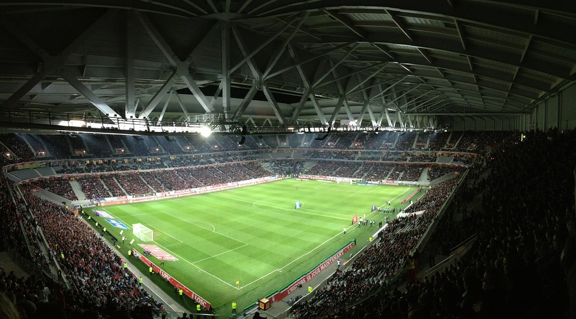
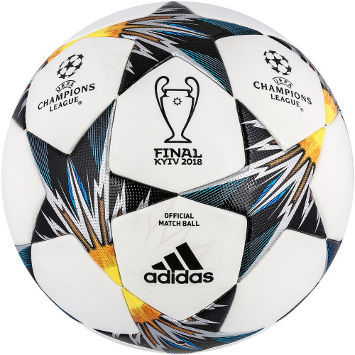
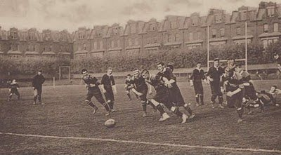

A história do futebol no Brasil começou em 1895, pelas mãos dos ingleses, assim como na maioria dos outros países. Os primeiros clubes começaram a se formar neste período. Assim como a fundação dos clubes, a prática também era restrita à elite branca. Diz-se que a primeira bola de futebol do país foi trazida em 1894 pelo paulista Charles William Miller. A aristocracia dominava as ligas de futebol, enquanto o esporte começava a ganhar as várzeas. As camadas mais pobres da população e até negros podiam apenas assistir. Somente na década de 1920, os negros passaram a ser aceitos ao passo que o futebol se massifica, especialmente com a profissionalização em 1933.
Regras
Cada partida tem 90 minutos e é dividida em dois tempos de 45 minutos cada.
O jogo é supervisionado por um árbitro.
É proibido o uso das mãos para o manejo da bola. Podem, entretanto, serem usados os pés, as pernas, o tronco e a cabeça.
Para evitar que os jogadores do time adversário fiquem apenas na área penal do lado adversário, foi criada a regra do impedimento. Ela consiste em impedir ou invalidar um gol que tenha sido feito por um jogador quando não há pelo menos dois jogadores da outra equipe entre ele a linha de fundo adversária.
O vencedor da partida é aquele que conseguir fazer o maior número de gols.
Em caso de desempate, podem ser feitas duas prorrogações de 15 minutos ao final dos tempos.
Quando um jogador comete faltas, ele pode receber um cartão amarelo ou um cartão vermelho. Se receber dois cartões amarelos ou um cartão vermelho em uma partida, ele é expulso do jogo.
Caso um jogador execute alguma agressão física sobre um adversário, o juiz deve marcar pênalti a favor do time adversário.
Quando a bola sai do campo pela linha de fundo, é cobrado escanteio se o último jogador a tocá-la estava na defensiva, e é cobrado tiro de meta se o último jogador a tocá-la estava no ataque. Nesse caso, o escanteio é a favor do time atacante e o tiro de meta, a favor do time da defensiva.
Os momentos e dados mais curiosos sobre a história do futebol mundial e brasileiro
O clube de futebol brasileiro mais antigo é o Sport Club Rio Grande, fundado em 19 de julho de 1900 na cidade de Rio Grande (RS).
O time de futebol mais antigo do mundo é o Sheffield Football Club, da Inglaterra, fundado em 24 de outubro de 1857.
A primeira partida de futebol no Brasil ocorreu em 15 de abril de 1895, na Várzea do Carmo (cidade de São Paulo), entre os funcionários de duas empresas que atuavam na cidade. O placar do jogo foi Companhia de Gás 2 x 4 Cia. Ferroviária São Paulo Railway.
O primeiro jogo de futebol, entre seleções, realizado no mundo ocorreu em Glasgow, capital da Escócia. Realizado em 30 de novembro de 1872, a Escócia empatou com a Inglaterra pelo placar de 0 a 0.
O futebol (regras, bola e informações) foi trazido ao Brasil em 1894 por Charles Miller, brasileiro filho de ingleses, ao retornar da Inglaterra onde viveu alguns anos e jogou no time do Southampton.
A primeira Copa do Mundo de Futebol foi realizada no Uruguai em 1930. O Uruguai foi campeão após vencer a Argentina pelo placar de 4 a 2.
Foi somente a partir da Copa do Mundo de 1950 que os jogadores começaram a usar números nas camisas.
O primeiro campeonato oficial de futebol ocorreu na Grã-Bretanha em 1863. A seleção inglesa foi campeã.
O primeiro campeonato de futebol, realizado no Brasil, foi o Paulista que ocorreu em 1902. O título ficou com o São Paulo Athletic Club.
A partida de futebol no Brasil onde ocorreu maior número de expulsões foi entre Portuguesa-SP e Botafogo-RJ. Realizada no torneio Rio-São Paulo de 1954, ocorreram 22 expulsões de jogadores, após uma briga entre os jogadores das duas equipes. O time paulista venceu o jogo pelo placar de 3 a 1.
O maior público pagante numa partida de futebol no Brasil foi no jogo entre Brasil e Paraguai, pelas Eliminatórias da Copa do Mundo de 1970. O jogo, realizado no estádio do Maracanã em 31 de agosto de 1969, foi visto por 183.341 pagantes. O Brasil venceu a partida pelo placar de 1 a 0.
O jogador mais velho a disputar uma partida de futebol oficial foi o inglês Neil McBain. Aos 52 anos e quatro meses, ele disputou uma partida oficial no ano de 1947.
O primeiro jogo oficial (amistoso) do Brasil foi contra a Argentina. Realizado em Buenos Aires em 20 de setembro de 1914, os argentinos levaram a melhor e ganharam por 3 a 0.
Foi somente na Copa do Mundo de 1970 que os árbitros de futebol começaram a usar os cartões vermelho e amarelo.
A versão do Campeonato Brasileiro de Futebol que reuniu a maior quantidade de clubes foi a do ano 2000. Nesta edição, batizada de Copa João Havelange, participaram 116 clubes da 1ª, 2ª e 3ª divisões do futebol brasileiro.
Numa partida de futebol profissional, um jogador de linha anda e corre entre 10 e 14 quilômetros.
Um jogo de futebol oficial (padrão FIFA) deve seguir determinadas medidas de campo e bola: o campo deve ter medida entre 100 metros e 110 metros de comprimento e entre 64 metros e 75 metros de largura; a distância entre as duas traves deve ser de 7,32 metros e do chão até o travessão (trave superior) deve ter 2,44 metros; a bola de futebol deve ter circunferência entre 68 cm e 70 cm, sendo que o peso deve ficar entre 410 gramas e 450 gramas.
No Brasil, é comemorado em 14 de janeiro o Dia do Treinador de Futebol. No dia 25 de abril, é comemorado o Dia do Goleiro.
Pelé (Edson Arantes do Nascimento), o maior jogador de futebol de todos os tempos, celebrizou a camisa número 10 da seleção brasileira e do Santos Futebol Clube.

Estádio de futebol atual

Bola de futebol atual

Partida antiga de futebol